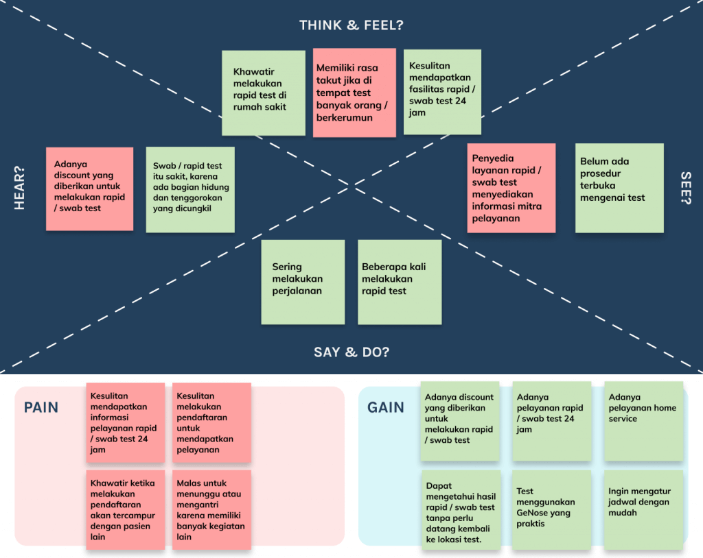
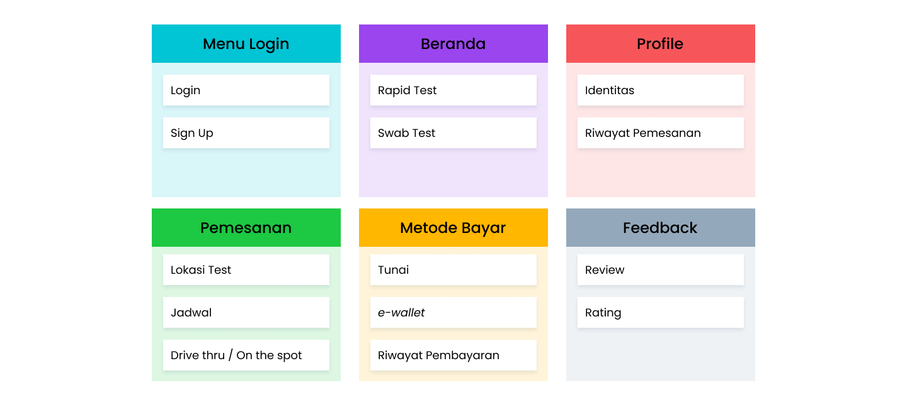
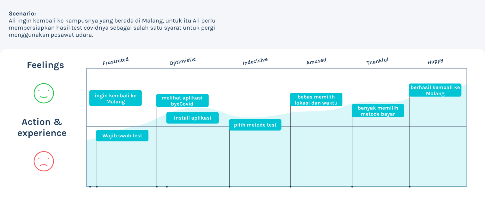
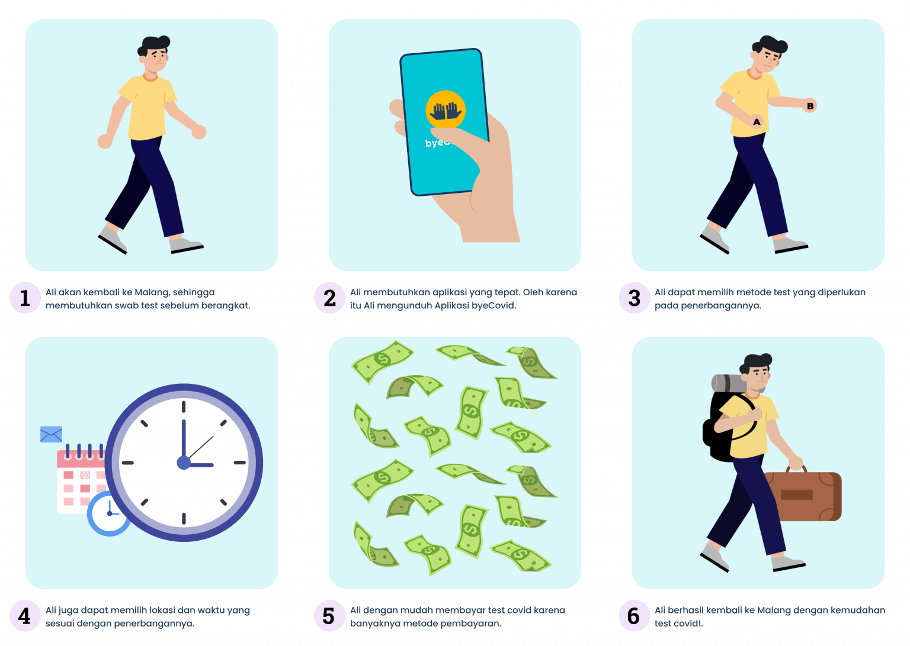
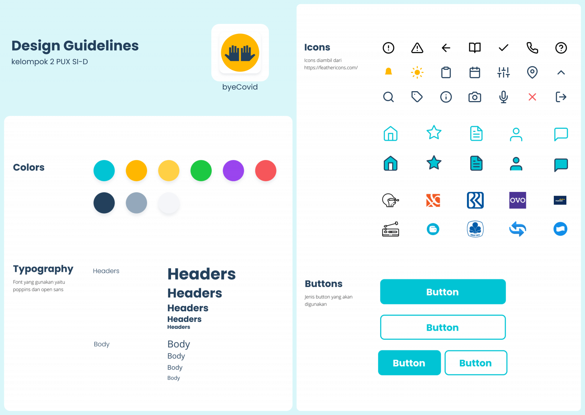

Hello!, this article will cover ByeCovid design process.
byeCovid is a concept of application for a COVID-19 test booking application. This application is designed using the Design Thinking method to address complex problems and meet user needs by involving potential users in the process. The app contains up-to-date information on COVID-19 cases in Indonesia and news related to it. byeCovid will assist users in making COVID-19 test appointments more easily.
Goals
Many people wanted to be able to book a test easily and get clear information about the COVID-19 test procedure. byeCovid is expected to provide optimal service for everyone who want to make schedule for COVID-19 Tests and provide the information regarding healthcare facilities that offer COVID-19 test and the procedures.
Design Thinking Phase
Empathize
In this phase, we conduct interviews with potential users in order to understand the needs, desires, and goals that users wanted
I was responsible to do an interview with one of the potential users. After conducting interviews with the users, we have identified the potential users as students, workers, and healthcare facilities. In my case, the students problems is defined below:
Students - Students will resume academic activities, and as a requirement for attending classes, they have to be tested with COVID-19 test. Due to the busy preparations, scheduling a COVID-19 test becomes quite challenging.
Define
In this phase, we conduct qualitative data analysis of user interview, create user personas, visualize empathy maps, and analyze insights obtained from user interviews
I was responsible for visualizing user's problems into easily readable empathy maps. 
Ideation
In this phase, we create information architecture, user journey, user stories, and storyboards in order to visualize ideas that meet users needs.
Organizing information in software development is a difficult decision to make. We considers many aspect based on Define phase and we carefuly creating structure of the information in most effective way. 
In this phase, I was responsible for creating the user's journey, playing with potential user's feelings, action, and experience based on the user's stories that my team had created. 
And then, by using user's journey I was able to visualizing the storyboards. 
Prototype
In this phase, we create the UI design starting from design guidelines, wireframes, screen flows, low-fidelity prototype, and high-fidelity prototype using tools like Figma, Illustrator, and Marvel.
In this phase, I was responsible for creating design guidelines that help make the UI Designer's work easier when developing high-fidelity prototype. 
There are three designers in the team and we decided to divide the work based on each capacity. Based on information architecture in the above, I managed to create Login menu, Home, Feedback, and Payment both in low-fidelity and high-fidelity prototype. After the design were done, I used Marvel to create fully functional prototype.
Testing
In this phase, we conduct evaluation using SUS Questionnaire (System Usability Scale) methods, to evaluate and understand the user's satisfaction for the system we have created with the prototype.
The prototype was tested with 5 respondents using the SUS Questionnaire and the results are presented in table below:
| Respondent | Final Score |
|---|---|
| Respondent 1 | 84 |
| Respondent 2 | 90 |
| Respondent 3 | 88 |
| Respondent 4 | 88 |
| Respondent 5 | 68 |
| Average | 83 |
Based on the average score above, it can be concluded that the satisfaction aspect of the system scored 83. Using Bangor, Kortum & Miller scale (2009), the designed system is categorized as "Excellent," which means that users are satisfied and find the system usable with minimal difficulties.